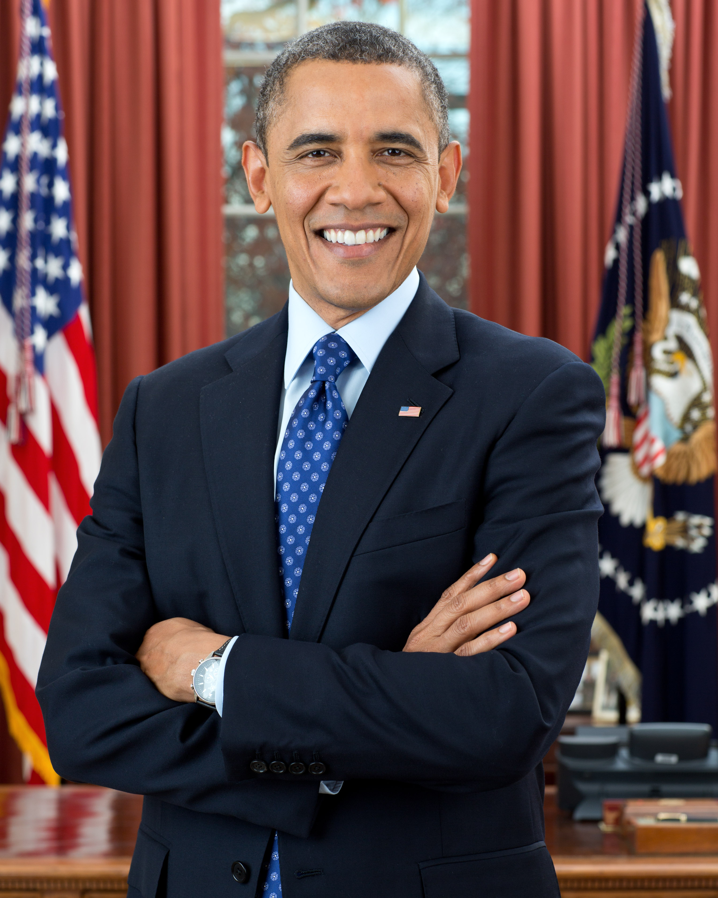

先检查像不像，再判断发型好不好。
公开素材重建基线：对照原照片，旋转检查脸部，再切换三款发型。
当前仅验证单图脸部拟合与试戴操作。侧后脑为补全，尚无多角度实拍或扫描真值，不能据此判断完整头模精度。
输入照片

Pete Souza / 白宫，2012 年官方肖像。来源页标为公有领域。
仅为技术样本，不代表本人使用、评价或代言本产品。
本次检查
- 五官位置与脸型轮廓
- 转到侧面是否出现明显变形
- 三款发型是否保持同一张脸
- 网格模式下是否有缺口
公开素材重建基线：对照原照片，旋转检查脸部，再切换三款发型。

Pete Souza / 白宫，2012 年官方肖像。来源页标为公有领域。
仅为技术样本，不代表本人使用、评价或代言本产品。